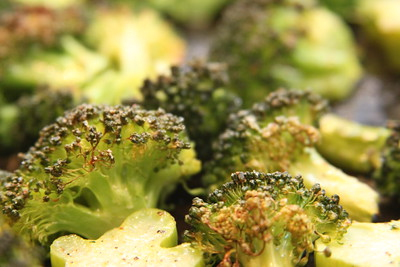

Return to Index
Roasted Garlic Lemon Broccoli

Photo Credit: Keith McDuffee
Description
A couple of paragraphs about broccoli here.
Ingredients
- 2 heads of broccoli, separated into florets
- 1 clove garlic, minced
- 1/2 teaspoon lemon juice
- 2 teaspooons extra-virgin olive oil
- 1/2 teaspoon ground black pepper
- 1 teaspoon salt
Steps
- Preheat the oven to 400 degrees F (200 degrees C).
- Toss broccoli florets with extra virgin olive oil, sea salt, pepper,
and garlic in a large bowl. Spread the broccoli out in an even layer on a baking sheet.
- Bake in the preheated oven until florets are tender enough to pierce the stems with a fork, 15 to 20 minutes.
Remove and transfer to a serving platter.
- Squeeze lemon juice liberally over broccoli before serving for a refreshing, tangy finish.